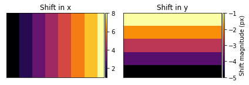

divide multi-pixel shifts incremently into blocks of 500 * 500 pixels
Contents
from pygeotools.lib import geolib,iolib,warplib
import numpy as np
import os,sys,glob,shutil
import matplotlib.pyplot as plt
from imview import pltlib
img_fn = '/nobackup/sbhusha1/feature_tracking_wg/LC08_L1TP_062017_20180903_20180912_01_T1_B8_s.TIF'
img_ds = iolib.fn_getds(img_fn)
img_ma = iolib.ds_getma(img_ds)
f,ax = plt.subplots()
pltlib.iv(img_ma,ax=ax,cmap='gray')
/nobackupp11/sbhusha1/sw/imview/imview/lib/pltlib.py:149: MatplotlibDeprecationWarning: You are modifying the state of a globally registered colormap. In future versions, you will not be able to modify a registered colormap in-place. To remove this warning, you can make a copy of the colormap first. cmap = copy.copy(mpl.cm.get_cmap("gray"))
cmap.set_bad('k', alpha=1)
<AxesSubplot:>
img_ds.RasterXSize
3780
img_ma.shape
(2480, 3780)
ny,nx = img_ma.shape
divide multi-pixel shifts incremently into blocks of 500 * 500 pixels¶
shift_arx = np.zeros((ny,nx))
shift_arx[:,:500] = 1.0
shift_arx
array([[1., 1., 1., ..., 0., 0., 0.],
[1., 1., 1., ..., 0., 0., 0.],
[1., 1., 1., ..., 0., 0., 0.],
...,
[1., 1., 1., ..., 0., 0., 0.],
[1., 1., 1., ..., 0., 0., 0.],
[1., 1., 1., ..., 0., 0., 0.]])
shift_arx[:,500:1000] = 2
shift_arx
array([[1., 1., 1., ..., 0., 0., 0.],
[1., 1., 1., ..., 0., 0., 0.],
[1., 1., 1., ..., 0., 0., 0.],
...,
[1., 1., 1., ..., 0., 0., 0.],
[1., 1., 1., ..., 0., 0., 0.],
[1., 1., 1., ..., 0., 0., 0.]])
shift_arx[:,1000:1500] = 3
shift_arx[:,1500:2000] = 4
shift_arx[:,2000:2500] = 5
shift_arx[:,2500:3000] = 6
shift_arx[:,3000:3500] = 7
shift_arx[:,3500:] = 8
f,ax = plt.subplots()
pltlib.iv(shift_arx,ax=ax,cmap='inferno')
/nobackupp11/sbhusha1/sw/imview/imview/lib/pltlib.py:146: MatplotlibDeprecationWarning: You are modifying the state of a globally registered colormap. In future versions, you will not be able to modify a registered colormap in-place. To remove this warning, you can make a copy of the colormap first. cmap = copy.copy(mpl.cm.get_cmap("inferno"))
cmap.set_bad('0.5', alpha=1)
<AxesSubplot:>
now create a similar array with shift in y direction¶
shift_ary = np.zeros((ny,nx))
shift_ary[:500,] = -1
shift_ary
array([[-1., -1., -1., ..., -1., -1., -1.],
[-1., -1., -1., ..., -1., -1., -1.],
[-1., -1., -1., ..., -1., -1., -1.],
...,
[ 0., 0., 0., ..., 0., 0., 0.],
[ 0., 0., 0., ..., 0., 0., 0.],
[ 0., 0., 0., ..., 0., 0., 0.]])
shift_ary[500:1000,:] = -2
shift_ary[1000:1500,:] = -3
shift_ary[1500:2000,:] = -4
shift_ary[2000:,:] = -5
f,ax = plt.subplots()
pltlib.iv(shift_ary,ax=ax,cmap='inferno')
<AxesSubplot:>
f,ax = plt.subplots(1,2)
pltlib.iv(shift_arx,ax=ax[0],title='Shift in x',cmap='inferno')
pltlib.iv(shift_ary,ax=ax[1],title='Shift in y',cmap='inferno',label='Shift magnitude (px)')
plt.tight_layout()

outfn_vx_integer_pixel = '/nobackup/sbhusha1/feature_tracking_wg/vx_integer.tif'
outfn_vy_integer_pixel = '/nobackup/sbhusha1/feature_tracking_wg/vy_integer.tif'
iolib.writeGTiff(shift_arx,outfn_vx_integer_pixel,src_ds=img_ds)
iolib.writeGTiff(shift_ary,outfn_vy_integer_pixel,src_ds=img_ds)
Perform the pixel shifting¶
https://stackoverflow.com/questions/56143632/how-to-estimate-a-sub-pixel-shift-between-images-with-non-uniform-translation-ro¶
## get initial coordinate position using meshgrid
nx_val = np.arange(0,nx)
ny_val = np.arange(0,ny)
img_ma.shape
(2480, 3780)
NX,NY = np.meshgrid(nx_val,ny_val)
NX.shape
(2480, 3780)
NY.shape
(2480, 3780)
NX_shift = NX + shift_arx
NY_shift = NY + shift_ary
import scipy.ndimage
yx = np.array([np.ma.array(NY_shift).compressed(),np.ma.array(NX_shift).compressed()])
#h2_samp = scipy.ndimage.map_coordinates(h, yx, order=1,mode='nearest')
shift_samp = scipy.ndimage.map_coordinates(img_ma,yx,order=1,mode='nearest')
shift_samp
array([8139, 8466, 8893, ..., 7669, 7669, 7669], dtype=uint16)
np.ma.array(NY_shift).compressed()
array([-1.200e+00, -1.200e+00, -1.200e+00, ..., 2.477e+03, 2.477e+03,
2.477e+03])
shift_img = np.zeros_like(img_ma)
shift_img[np.ma.array(NY).compressed(),np.ma.array(NX).compressed()] = shift_samp
f,ax = plt.subplots()
pltlib.iv(np.ma.fix_invalid(shift_img),ax=ax,cmap='gray')
/nobackupp11/sbhusha1/sw/imview/imview/lib/pltlib.py:149: MatplotlibDeprecationWarning: You are modifying the state of a globally registered colormap. In future versions, you will not be able to modify a registered colormap in-place. To remove this warning, you can make a copy of the colormap first. cmap = copy.copy(mpl.cm.get_cmap("gray"))
cmap.set_bad('k', alpha=1)
<AxesSubplot:>
outfn = os.path.splitext(img_fn)[0]+'_multi_pixel_synthetic_shift.tif'
iolib.writeGTiff(shift_img,outfn,src_ds=img_ds)
Add a known deformation field to the glacier ? Maybe steal from ITS_LIVE ?¶
its_live_vx_fn = '/nobackup/sbhusha1/feature_tracking_wg/its_live/vx_240m_its_live.tif'
its_live_vy_fn = '/nobackup/sbhusha1/feature_tracking_wg/its_live/vy_240m_its_live.tif'
ds_list = warplib.memwarp_multi_fn([img_fn,its_live_vx_fn,its_live_vy_fn],r='cubicspline')
its_live_vx,its_live_vy = [iolib.ds_getma(ds_list[x]) for x in [1,2]]
Warping all inputs to the following:
Resolution: 15.0
Extent: [584872.5, 6717982.5, 641572.5, 6755182.5]
Projection: '+proj=utm +zone=7 +datum=WGS84 +units=m +no_defs'
Resampling alg: cubicspline
1 of 3: /nobackup/sbhusha1/feature_tracking_wg/LC08_L1TP_062017_20180903_20180912_01_T1_B8_s.TIF
2 of 3: /nobackup/sbhusha1/feature_tracking_wg/its_live/vx_240m_its_live.tif
nl: 2480 ns: 3780 res: 15.000
3 of 3: /nobackup/sbhusha1/feature_tracking_wg/its_live/vy_240m_its_live.tif
nl: 2480 ns: 3780 res: 15.000
f,ax = plt.subplots(1,2)
clim = (-150,150)
pltlib.iv(its_live_vx,ax=ax[0],cmap='RdBu',label='vx(m/yr)',clim=clim)
pltlib.iv(its_live_vy,ax=ax[1],cmap='RdBu',label='vy(m/yr)',clim=clim)
/nobackupp11/sbhusha1/sw/imview/imview/lib/pltlib.py:149: MatplotlibDeprecationWarning: You are modifying the state of a globally registered colormap. In future versions, you will not be able to modify a registered colormap in-place. To remove this warning, you can make a copy of the colormap first. cmap = copy.copy(mpl.cm.get_cmap("RdBu"))
cmap.set_bad('k', alpha=1)
<AxesSubplot:>
### assume dt = 0.5 yr and value of 15 m pixel size. so displacement in pixel is a*0.5/15.
its_live_vx = (its_live_vx*0.5)/15
its_live_vy = (its_live_vy*0.5)/15
f,ax = plt.subplots(1,2)
clim = (-10,10)
pltlib.iv(its_live_vx,ax=ax[0],cmap='RdBu',label='x_shift(px)',clim=clim)
pltlib.iv(its_live_vy,ax=ax[1],cmap='RdBu',label='y_shift(px)',clim=clim)
<AxesSubplot:>
NX_shift_deformation_feild = NX + its_live_vx
NY_shift_deformation_feild = NY + its_live_vy
yx = np.array([np.ma.array(NY_shift_deformation_feild).compressed(),np.ma.array(NX_shift_deformation_feild).compressed()])
shift_samp = scipy.ndimage.map_coordinates(img_ma,yx,order=1,mode='nearest')
shift_img_deformation = np.zeros_like(img_ma)
shift_img_deformation[np.ma.array(NY).compressed(),np.ma.array(NX).compressed()] = shift_samp
f,ax = plt.subplots()
pltlib.iv(np.ma.fix_invalid(shift_img_deformation),ax=ax,cmap='gray')
/nobackupp11/sbhusha1/sw/imview/imview/lib/pltlib.py:149: MatplotlibDeprecationWarning: You are modifying the state of a globally registered colormap. In future versions, you will not be able to modify a registered colormap in-place. To remove this warning, you can make a copy of the colormap first. cmap = copy.copy(mpl.cm.get_cmap("gray"))
cmap.set_bad('k', alpha=1)
<AxesSubplot:>
outfn = os.path.splitext(img_fn)[0]+'_deformation_synthetic_shift.tif'
iolib.writeGTiff(shift_img_deformation,outfn,src_ds=img_ds)
Write out shift grids¶
img_fn
'/nobackup/sbhusha1/feature_tracking_wg/LC08_L1TP_062017_20180903_20180912_01_T1_B8_s.TIF'
outfn_vx_deformation = '/nobackup/sbhusha1/feature_tracking_wg/vx_deformation.tif'
outfn_vy_deformation = '/nobackup/sbhusha1/feature_tracking_wg/vy_deformation.tif'
iolib.writeGTiff(its_live_vx,outfn_vx_deformation,src_ds=img_ds)
iolib.writeGTiff(its_live_vy,outfn_vy_deformation,src_ds=img_ds)
Add noises, maybe blur noise, etc¶